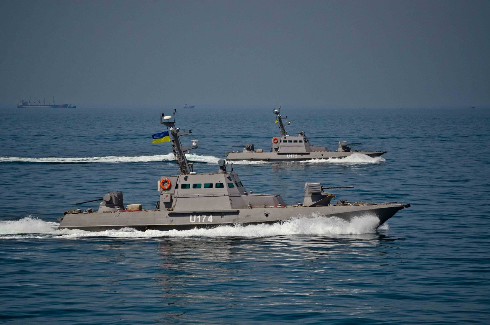
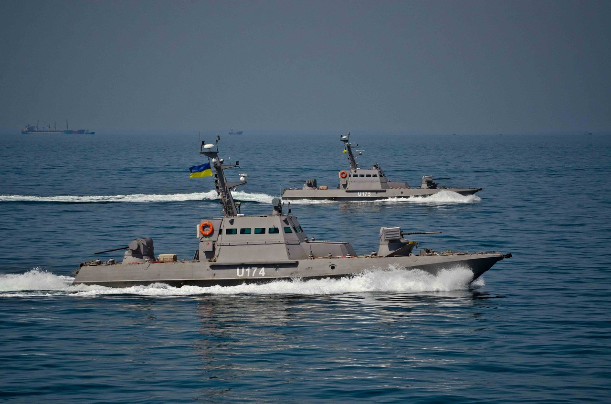

.png)
Бердянськ
Побудовано
Катер було закладено 2012 року на заводі «Кузня на Рибальському». Був спущений на воду у 2015 році.
3 липня 2016 року на свято Дня ВМС у Одесі катер разом із своїм систершипом був переданий Президентом до ВМС.[2]
В листопаді 2016 року були успішно завершені державні випробування МБАК «Аккерман» і «Бердянськ», обидва катери відправлені на пофарбування. Катери під час випробувань, що відбувалися на тлі тактичних флотських навчань показали дуже гарні ходові якості, безперебійну роботу систем і механізмів, а також живучість та надійність матеріальної частини.[3]
Служба
9 вересня 2016 року малі броньовані артилерійські катери (U174) «Аккерман» та (U175) «Бердянськ» на навчальних стрільбах у супроводі фрегату «Гетьман Сагайдачний» виявили російський протичовновий корабель «Смєтливий», який провів захоплення цілі й вів українські кораблі своїм бортовим озброєнням. «Гетьман Сагайдачний» поставив димову завісу під покровом якої катери підійшли ближче до російського корабля, розділилися та взяли його в напівобхват. Кораблі були готові до бою, снаряди були вже у люфі. «Смєтлівий» був змушений відступити. Таким чином «український москітний флот» здобув свою першу перемогу.[4][5][6]
23 жовтня в Одесі капелан Української православної церкви Олександр Філіпов освятив катери «Аккерман» та «Бердянськ»[7]
.jpg) 

Бердянмськ
.jpg) Назва: Бердянськ
Назва: БердянськБудівник: Кузня на Рибальському
Закладений: 25.10.2012
Спуск на воду: 11.11.2015
Отриманий: 03.07.2016
Клас і тип: МБАК 58155 «Гюрза-М»
Водотоннажність: повна 54 т
Довжина: 23,0 м
Ширина: 4,8 м
Осадка: 1,0 м
Двигуни: ГЕУ 2 дизелі
Швидкість: 25 вуз.
Дальність плавання: 900 миль (12 вуз.)
Автономність: 5 діб
Екіпаж: 5 осіб
Навігаційне та
радіолокаційне обладнання:
РЛС «Дельта-М»
ОЕлС «Sarmat»